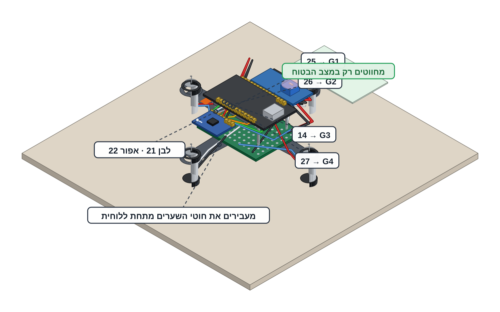

חוטי האות — ארבעה שערים וחיישן
שישה חוטים דקים שמעבירים מידע, לא את החשמל של המנועים.
הסוללה מחכה בשקית חסינת האש שעל שולחן המורה וכבל ה-USB מנותק. מצב בטוח = סוללה מנותקת — זה המצב היחיד שבו נוגעים בחיווט, בחוטים או במנועים. המדחפים נשארים בקופסאות של המורה: מדחף עולה על הרחפן אחרון ובפעם הראשונה רק בשלב 11.
מלחימים רק כשהמורה ליד התחנה, עם משקפי מגן על העיניים כל זמן שהמלחם דולק — בדיוק כמו בפרויקט 4.

תרשים החיווט

GPIO 25 --> G1 FRONT yellow GPIO 26 --> G2 RIGHT orange GPIO 14 --> G3 BACK green GPIO 27 --> G4 LEFT blue GPIO 21 --> MPU SDA white GPIO 22 --> MPU SCL grey Right header, counting from VIN: VIN GND 13 12 14 27 26 25
מה עושים
מכינים ארבעה חוטי שער דקים בארבעה צבעים באורך כ-8 ס"מ ועוד שני חוטים דקים לחיישן. חוט דק מספיק כאן — החוטים האלה נושאים מידע ולא את הזרם של המנועים.
מחברים את ארבעת חוטי השערים, כל אחד בצבע שלו: צהוב מ-GPIO 25 אל G1 (קדמי), כתום מ-GPIO 26 אל G2 (ימני), ירוק מ-GPIO 14 אל G3 (אחורי) וכחול מ-GPIO 27 אל G4 (שמאלי). ארבעת הפינים יושבים ברצף על המחבר הימני: 14 · 27 · 26 · 25.
מחברים את שני חוטי החיישן: לבן מ-GPIO 21 אל SDA של ה-MPU6050 ואפור מ-GPIO 22 אל SCL.
בצד הבקר משתמשים בשקעי דופונט נקבה (או מלחימים) ובצד הלוח והחיישן מלחימים. מעבירים את חוטי השערים מתחת ללוחית, הרחק מחוטי המנועים.
שמים את המולטימטר על Ω ובודקים כל אחד מארבעת פיני השערים מול GND — הקריאה בערך 10kΩ. זו אותה מדידה של נגד ההורדה שכבר נעשתה על הלוח, עכשיו מצד המוח: קריאה כזו מוכיחה שחוט השער באמת מחובר.
סופרים עם הכרטיס את החיבורים של כל הרחפן ומסמנים ✓ על כל 22 החיבורים — הרשימה נמצאת בהמשך הכרטיס. בסוף המורה עובר על החיווט וחותם.
ספירת החיבורים — 22 חיבורים
עוברים חיבור-חיבור על כל הרחפן, עוקבים באצבע מקצה אחד לקצה השני ומסמנים ✓. בסוף כל 22 המשבצות מסומנות.
את פתיל הסוללה הלחים המורה מראש — רק מוודאים שהוא במקום ושהצבעים נכונים.
רחפן מחווט לגמרי, בלי סוללה — והמולטימטר אומר שהוא הגיוני: ארבע קריאות של בערך 10kΩ מארבעת פיני השערים, כל חוט בצבע שלו.
זה הפרויקט האחד שבו החומרה יכולה לפגוע בכם — המדחפים והסוללה. בגלל זה המורה מחזיק את שניהם, בגלל זה חובשים משקפי מגן בכל רגע שמנוע יכול להסתובב, בגלל זה הרחפן תמיד על חוט ובגלל זה כל אחד רשאי להגיד STOP. כל הכללים בכרטיסיית R1.